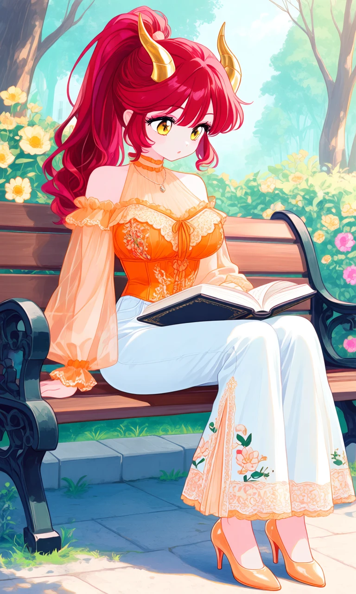
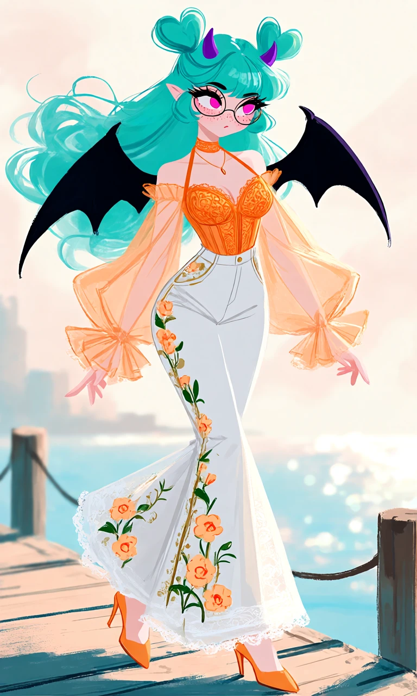

Apricot in Bloom

Outfit Prompt
halter neck, choker, thin necklace, pendant, cold shoulder, off-shoulder, sheer top, translucent fabric, orange top, light orange top, sheer sleeves, puffy sleeves, balloon sleeves, ruffled cuffs, lace bra, embroidered bustier, underbust, high-waisted pants, white pants, flared pants, wide-leg pants, side embroidery, lace details on pants, floral embroidery, light orange heels, pointed toe heels,
Outfit Examples



